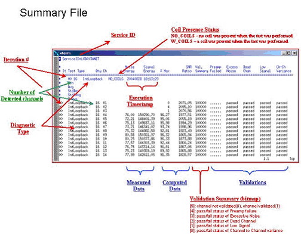

Proprietary to General Electric Company
Direction 5440000, Rev# 5
Signa HDxt Service Methods
Module Version 2.0, Version Date 6/18/09
Proprietary to General Electric Company |
Diagnostics >> RRF Chassis >> System Cabinet Loopback Functional Diagnostics
This diagnostic identifies RF signal problems with receive signal paths inside the RRF Chassis. This test is functionally identical to the System Cabinet Loopback Datapath diagnostic, but the functional diagnostic gives more detailed results in the test's main screen.
The Sys Cab Loopback diagnostic utilizes the exciter sourced signal. Noise (exciter “off” off) and Signal (exciter “on”) measurements are performed for all of the available channels based on detected hardware.
Within the chassis, the signal is routed through the Mux, UTNS, Receiver, and RRF-DIF boards. Lastly, signal is routed to the IRF I/O, IRF, and then the DRF via the receive bus. The intent of this diagnostic is to identify problems with the MUX, UTNS, and receiver boards. Other diagnostics address related hardware issues.
The 16-channel Switch diagnostic should be performed in conjunction with the System Cabinet Loopback diagnostic. Refer toTable 1 to analyze the results of these two diagnostics.
Receive Chain (Mux, UTNS, Rx)
System cabinet
Functioning MGD Chassis
8/16 channel RRF Chassis
Illustration 1: MCR II Diagnostic Block Diagram

Illustration 2: Excite III Receive Chain

Verify that no coils are connected to any of the LPCA ports, or select the coil connected override.
Click [Run].
Examine the results as illustrated below.
The diagnostic will return PASS or FAIL. The GE Sys Log will identify errors. The directory, /usr/g/service/datamine, contains files detailed results files and the rxOsc_Summary.log summary file.
Use C-Shell to view the detailed results that are logged in the summary file /usr/g/service/datamine/rxOsc_Summary.log.
Actual signal data is logged in data files within /usr/g/service/datamine.
For assistance with analyzing the results, refer to the images below. The images shown below pertain to the 16-channel Switch diagnostic, but the output format is very similar.
| NOTE: | Because values for this test can vary widely from system to system, benchmarks are specific to your system type. When a test fails, therefore, the log will indicate the tolerance level for the failed test. |
Illustration 3: Channel Data

Illustration 4: Summary File

Illustration 5: Basic Statistics

Illustration 6: Typical Output

When executed in conjunction with the 16-channel Switch diagnostic, system problems can be isolated to
the signal source – the exciter
the RRF Chassis’ receive chain – the MUX, UTNS, and receiver boards
outside the system cabinet
Table 1: Solution Table
| Sys CabLoopback | 16-channel Switch | Results |
|---|---|---|
| Failed | Failed | Problem within the RRF Chassis. Isolate the receive chain. |
| Failed | Passed | Problem with signal source for the Sys Cab Loopback. Check the exciter, cabling, and possible RF Chassis hardware such as power, backplane, etc. |
| Passed | Failed | Problem isolated to the 16-channel Switch, passive components back to the RRF Chassis, or possibly a bad Mux board. |
| Passed | Passed | Receive chain from the 16-channel Switch appears to be functioning. Run the Multi-coil Receive diagnostic to examine the signal path from the LPCA to the 16-channel Switch. |
None
None